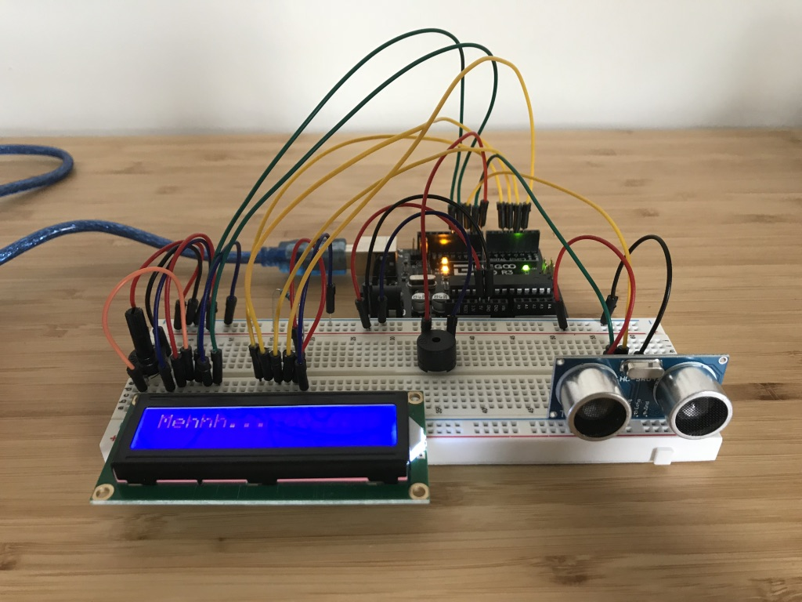
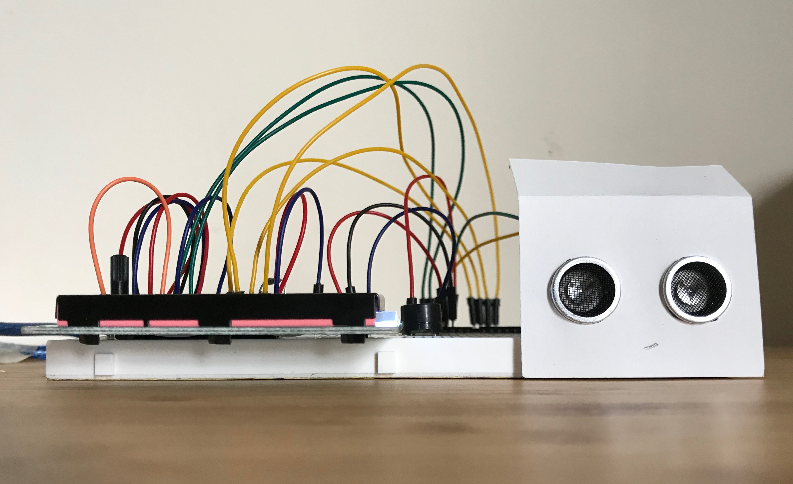

Ardiono HW 03: Shy Robot
An ultrasonic range finder reads the distance between the Arduino hardware and its environment. Based on the measured distance, a liquid crystal display (LCD) shows messages. Get too close to the sensor, and the buzzer also kicks in.
Hardware:
- Ultrasonic range finder (input)
- Liquid crystal display (output)
- Buzzer (output)

Setup: A linguid crystal display (LCD) and buzzer provide visual and audio output based on the ultrasonic range finder input.

Setup: A linguid crystal display (LCD) and buzzer provide visual and audio output based on the ultrasonic range finder input.

Setup: Add a couple more actors to set up the scene...
Artifact: a shy robot!